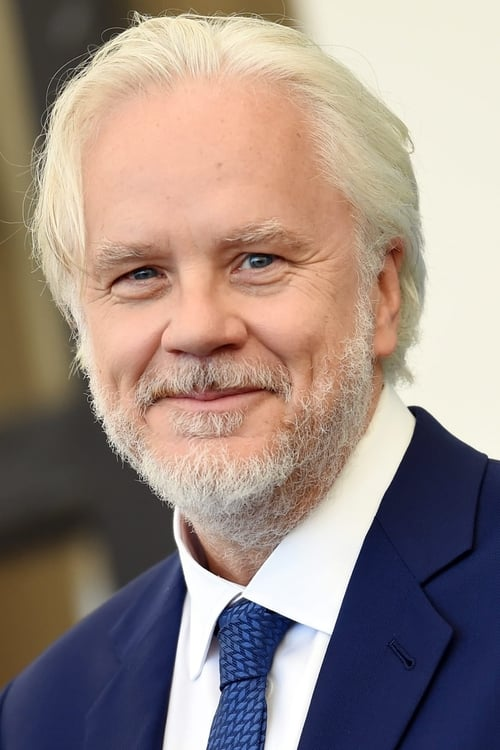
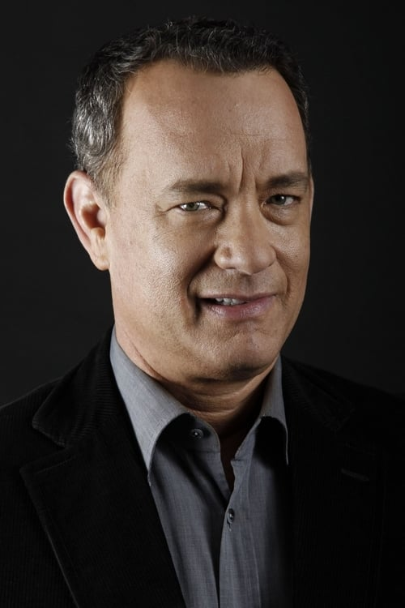
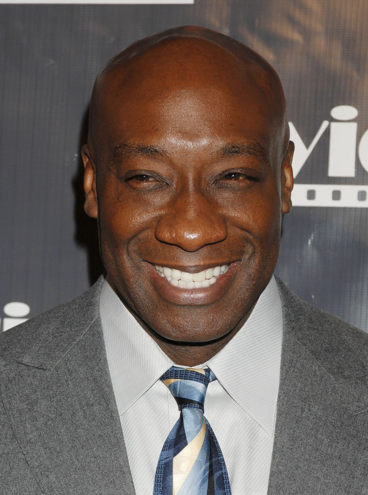

Rebríček najlepších filmov
| Poradie | Názov filmu | Rok vydania | Hodnotenie % |
|---|---|---|---|
| 1. | Vykúpenie z väznice Shawshank
Tim Robbins

|
1994 | 95,3 % |
| 2. | Forrest Gump
Tom Hanks

|
1994 | 94,5 % |
| 3. | Zelená míľa
Michael Clarke

|
1999 | 92,9 % |
| 4. | Sedem
Brad Pitt

|
1995 | 92,4 % |
| 5. | Prelet nad kukučím hniezdom
Jack Nicholson

|
1975 | 92,5 % |
| 6. | Schindlerov zoznam | 1993 | 92,3 % |
| 7. | Krstný otec | 1972 | 91,8 % |
| 8. | Dvanásť roznehvaných mužov | 1957 | 91,4 % |
| 9. | Nedotknuteľní | 2011 | 91,3 % |
| 10. | Pelíšky | 1999 | 91,2 % |
| 11. | Terminátor 2: Deň zúčtovania | 1991 | 90,9 % |
| 12. | Pulp Fiction: Historky z podsvetia | 1994 | 90,7 % |
| 13. | Krstný otec II | 1974 | 90,8 % |
| 14. | Pán prsteňov: Spoločenstvo prsteňa | 2001 | 90,6 % |
| 15. | Pán prsteňov: Návrat kráľa | 2003 | 90,6 % |
| 16. | Mlčanie jahniat | 1991 | 90,5 % |
| 17. | Vtedy na Západe | 1968 | 90,5 % |
| 18. | Temný rytier | 2008 | 90,4 % |
| 19. | Gran Torino | 2008 | 90,3 % |
| 20. | Matrix | 1999 | 90,2 % |